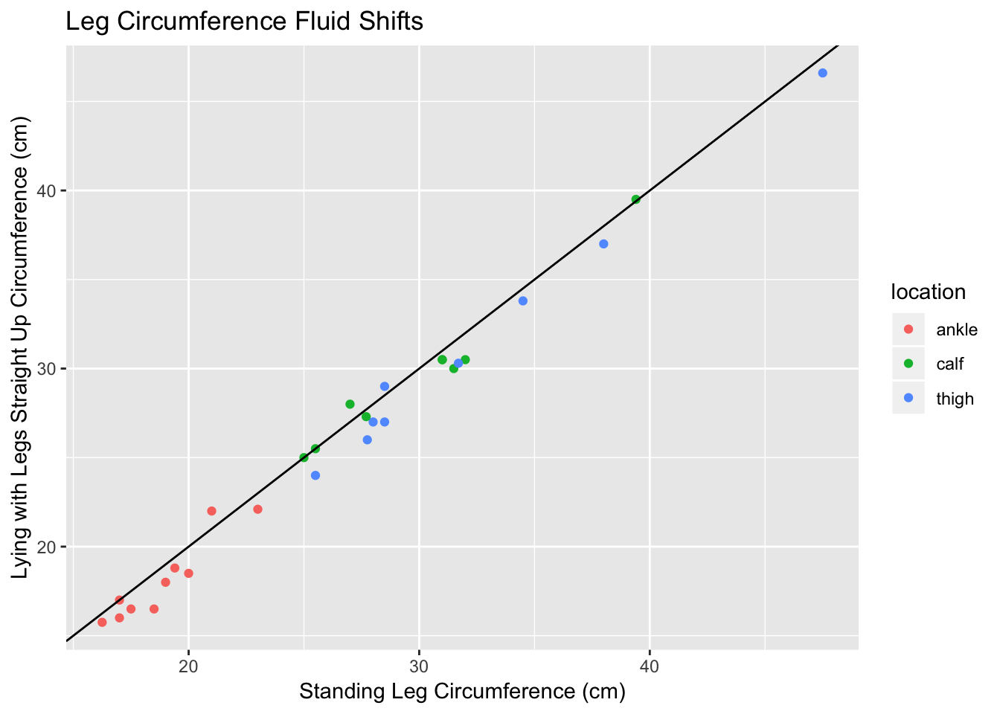

Today I ran an experiment with the students in my daughter’s First Lego League team. It was meant to demonstrate how fluid shifts in space. The kids measured their leg circumference at 3 different spots after standing for 10 minutes. They lay with their legs propped up in the air for 10 more minutes and then re-measured the circumference.
The inspiration for this activity came from the NASA website.
library(googlesheets)
suppressPackageStartupMessages(library(dplyr))
library(ggplot2)
library(tidyr)
my_sheets <- gs_ls()
fb <- gs_title("get_a_leg_up")## Sheet successfully identified: "get_a_leg_up"x <- gs_read(fb)## Accessing worksheet titled 'Sheet1'.## Parsed with column specification:
## cols(
## student = col_integer(),
## location = col_character(),
## pre_post = col_character(),
## circum = col_double()
## )x$student <- factor(x$student)
x$location[which(x$location == "a")] <- "thigh"
x$location[which(x$location == "b")] <- "calf"
x$location[which(x$location == "c")] <- "ankle"
x$location <- factor(x$location)
x$pre_post <- factor(x$pre_post, levels = c("pre", "post"))
x <- tbl_df(x)There were 7 kids in the inital group and 2 more kids and me in a second session. Pre and post measurements are plotted below against an identity line.
x %>% spread(pre_post, circum) %>%
ggplot(aes(x = pre, y = post, color = location)) +
geom_point() +
geom_abline(slope = 1) +
ggtitle("Leg Circumference Fluid Shifts") +
xlab("Standing Leg Circumference (cm)") +
ylab("Lying with Legs Straight Up Circumference (cm)")## Warning: Removed 2 rows containing missing values (geom_point). From this curve most dots were to the right of the identity line, a few were on the line, and a few were above it. There was a trend that the pre measurements were higher than the post measurements.
Because of multiple comparisons, I computed the Bonferroni correction to be 0.05/3 or about 0.0167.
I ran paired t-tests on each location. The thigh just above the knee demonstrated a significant difference of about 1 cm between the two positions.
loc_a <- x %>%
filter(location == "thigh", student != 5) %>%
arrange(pre_post, student)
t.test(circum ~ pre_post, data = loc_a, paired = TRUE)##
## Paired t-test
##
## data: circum by pre_post
## t = 4.6185, df = 8, p-value = 0.001714
## alternative hypothesis: true difference in means is not equal to 0
## 95 percent confidence interval:
## 0.5146123 1.5409433
## sample estimates:
## mean of the differences
## 1.027778The calf did not demonstrate a significant difference between the two positions. The mean of the differences was 0.367 but this did not meet statistical significance. The reason for this might be because you can flex your calf and it might change in circumference.
loc_b <- x %>%
filter(location == "calf", student != 5) %>%
arrange(pre_post, student)
t.test(circum ~ pre_post, data = loc_b, paired = TRUE)##
## Paired t-test
##
## data: circum by pre_post
## t = 1.397, df = 8, p-value = 0.1999
## alternative hypothesis: true difference in means is not equal to 0
## 95 percent confidence interval:
## -0.2385832 0.9719165
## sample estimates:
## mean of the differences
## 0.3666667The ankle demonstrated a difference of about 0.75 cm between the two positions, but this was not a significant difference with the Bonferroni adjusted type 1 error rate of 0.0167.
loc_c <- x %>%
filter(location == "ankle") %>%
arrange(pre_post, student)
t.test(circum ~ pre_post, data = loc_c, paired = TRUE)##
## Paired t-test
##
## data: circum by pre_post
## t = 2.8939, df = 9, p-value = 0.01777
## alternative hypothesis: true difference in means is not equal to 0
## 95 percent confidence interval:
## 0.1637273 1.3362727
## sample estimates:
## mean of the differences
## 0.75Discussion
Leg circumference did appear to decrease when comparing lying down with legs up to a standing position. This was notable in the thigh only but not in the calf or ankle. The reason for the different results is hard to interpret but might include measurement error versus a different propensity of the tissues underlying these areas to swell or contract.